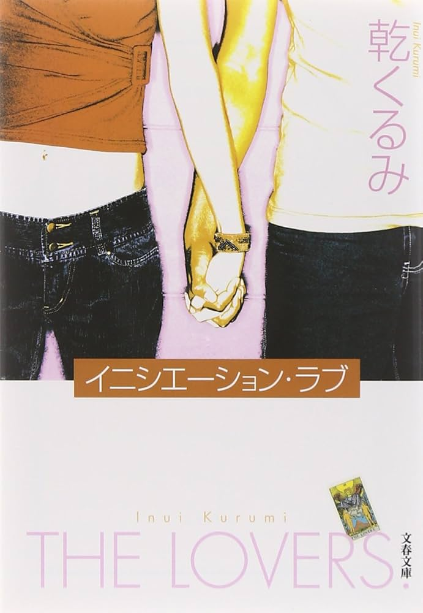
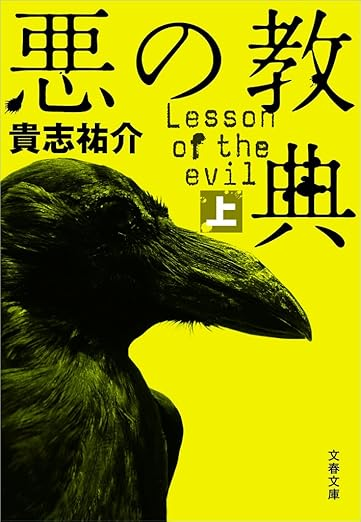
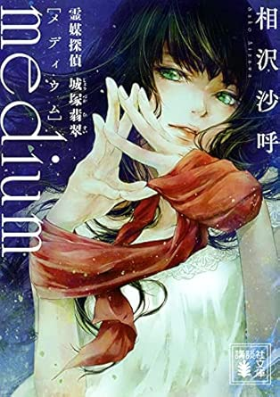
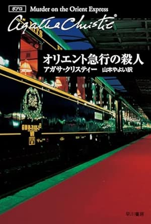
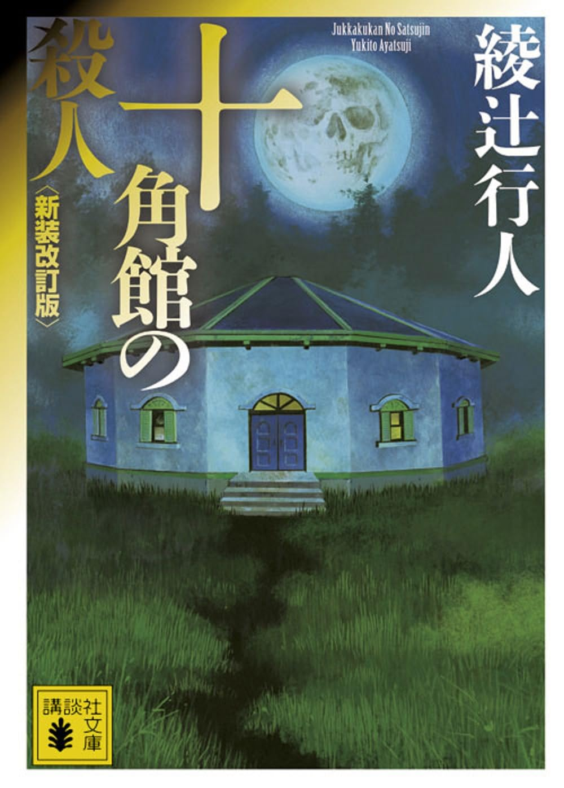

殺戮に至る病

読者の認識を揺さぶる構成と、重苦しい空気が印象的な作品。
ジャンルを知ると、ミステリー小説はもっと面白くなる。
ミステリー小説には、論理的な謎解きを楽しむ作品もあれば、 恐怖や緊張感を味わう作品、読者の思い込みを利用する作品もあります。 ジャンルごとの特徴を知ることで、自分に合った作品を見つけやすくなります。
犯人当てだけでなく、恐怖や緊張感、心理の揺れを強く感じるジャンルです。 読み進めるほどに不安が増していく感覚が魅力です。

読者の認識を揺さぶる構成と、重苦しい空気が印象的な作品。
不気味な違和感が続き、読後に強い印象を残す異色作。

日常の裏に潜む狂気が徐々に露わになる恐怖のサスペンス。
手がかりや論理、構造によって真相へたどり着くジャンルです。 一見すると不可解な現象も、すべて説明できることが魅力です。

霊能力という不可思議な要素を論理で解き明かす作品。 先入観を覆す構造が魅力です。

孤島の密室事件を論理で解き明かす、本格ミステリーの代表作。

シャーロック・ホームズの原点。 観察と論理による推理の面白さを味わえる。
孤島や館、列車などの閉ざされた空間で事件が起こるジャンルです。 登場人物が逃げられない状況の中で疑心暗鬼が深まり、 誰が犯人なのかを推理する面白さがあります。
クローズドサークルの代表作。孤島で一人ずつ消えていく恐怖が魅力。

列車という閉鎖空間で進む濃密な推理劇。

孤島の館で起こる連続殺人。 現代日本ミステリーを代表するクローズドサークル作品です。
文章の見せ方や読者の思い込みを利用し、 読んでいる側の認識そのものを揺さぶるジャンルです。 真相が明かされた瞬間、物語全体の見え方が一変するのが最大の魅力です。
読者の前提を覆す構成で強烈な印象を残す作品。 真相に気づいた瞬間の衝撃は忘れられません。
一見すると恋愛小説のように進む物語。 最後の仕掛けによってすべての意味が変わります。
タイトルや展開からは想像できない構造を持つ作品。 読み終えたあとに全体を見返したくなる一冊です。